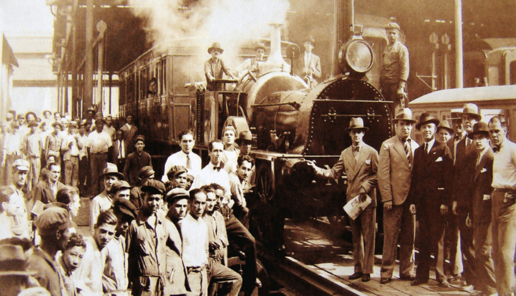

Os primeiros Barcos
Liverpool and Manchester Railway (Inglaterra, 1830)
Esta foi a primeira ferrovia intermunicipal do mundo a ser construída com o propósito de transportar tanto passageiros quanto cargas de forma regular.
Sua inauguração, com a famosa locomotiva "Rocket" de George Stephenson, demonstrou a viabilidade comercial do transporte ferroviário em grande escala e impulsionou a "mania ferroviária" (railway mania) que se espalhou pelo mundo.
O Canal Bridgewater (Inglaterra 1759 - 1761)
O Canal Bridgewater, inaugurado em 1761 na Inglaterra, é um exemplo notável. Ele foi construído para transportar carvão das minas do Duque de Bridgewater para Manchester, reduzindo drasticamente o custo do carvão na cidade e demonstrando a viabilidade econômica dos canais.
Ele se estende por 66 km, conectando Runcorn, Manchester e Leigh, no noroeste da Inglaterra. A construção do canal começou em 1759 e foi concluída em 1776, com a extensão de Runcorn a Manchester. O canal foi fundamental para o transporte de carvão e outras mercadorias, impulsionando a Revolução Industrial.
Ele se estende por 66 km, conectando Runcorn, Manchester e Leigh, no noroeste da Inglaterra. A construção do canal começou em 1759 e foi concluída em 1776, com a extensão de Runcorn a Manchester. O canal foi fundamental para o transporte de carvão e outras mercadorias, impulsionando a Revolução Industrial.

Baltimore and Ohio Railroad (EUA, 1827)
A Baltimore and Ohio Railroad (B&O), fundada em 1827, detém a distinção de ser a primeira transportadora comum de cargas e passageiros fretada nos Estados Unidos, marcando um momento significativo na história do transporte do país.
Seu objetivo inicial era conectar Baltimore ao Vale do Ohio, competindo com o domínio de Nova York no comércio com o oeste através do Canal Erie. O sucesso inicial da B&O impulsionou um boom ferroviário em todo o país e desempenhou um papel crucial na expansão para o oeste e no desenvolvimento industrial do país.

Estrada de Ferro Mauá (Brasil, 1854)
A Estrada de Ferro Mauá, inaugurada em 30 de abril de 1854, foi a primeira ferrovia do Brasil. Localizada no Rio de Janeiro, ela ligava o Porto de Mauá a Fragoso, em Magé, com uma extensão inicial de 14,5 km. A iniciativa foi do empresário Irineu Evangelista de Sousa, conhecido como Barão de Mauá, que idealizou a ferrovia como um marco para o desenvolvimento do país.
A Estrada de Ferro Mauá desempenhou um papel crucial na história do transporte ferroviário brasileiro, sendo um dos primeiros exemplos de infraestrutura moderna no país. A ferrovia impulsionou o desenvolvimento da região, facilitando o transporte de pessoas e mercadorias.
Voltar